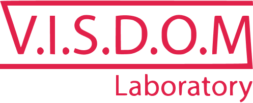

Научный подход
Для пациента:
Мобильное приложение и чат-бот, которые сопровождают пациента в период до и
после операции по замене сустава.
Сопровождение осуществляется при помощи ежедневных уведомлений пациенту о
необходимости выполнения назначенной
рекомендации.
Для врача:
Web-приложение и мобильное приложение, которые позволяют врачу отслеживать
динамику состояния пациента во время
реабилитационного периода и в нужный момент сменить лечение в случае
ухудшения
состояния пациента.
Программа виртуальной реальности «Девирта-Точность» – это мультимедийная
реабилитационная система
с использованием виртуальной реальности и механизма биологически обратной
связи
для восстановления крупной
и мелкой моторики верхних конечностей.
Программа виртуальной реальности «Девирта-Точность» базируется на
использовании
бесконтактного сенсорного датчика, что
обеспечивает дополнительную свободу
в проведении упражнений. Этот инновационный продукт
не только сокращает реабилитационный период, но и делает проведение
восстановительных упражнений приятным
и эффективным.
Система позволяет вести подробный учёт всех исследований, находящихся в
данный
момент
в делопроизводстве: следить за сроками, не упускать появления новых
данных.
Помимо этого в CRMExp можно вести кадровый учёт, учёт оплаты труда
экспертов.
Программа позволяет просто
и наглядно получать подробную статистику по работе компании, что позволит
лучше
вести дела и держать всё
под контролем.
Орлова
Юлия Александровна
Руководитель лаборатории
д.т.н., к.т.н., зав. кафедрой ПОАС, ученый секретарь диссертационного
совета
Опыт работы – 14 лет
Член-корреспондент Академии менеджмента образования и культуры, член
Российской Ассоциации Нечетких систем и мягких
вычислений, Российской ассоциации искусственного интеллекта,
руководитель грантов Президента РФ, РНФ, РФФИ и др.
Эксперт «Росаккредагенстсво», эксперт РФФИ
более 270 научных работ
8-903-317-64-16
yulia.orlova@gmail.com
Зубков
Александр Владимирович
Team Leader
Стажировался в комании Intel и в лаборатории SportEMI (г. Ереван,
Армения). Победитель хакатонов ДГТУ 2019
и участник JAVA-hack.
Студенты
ФЭВТ ВОЛГГТУ
Team
Ответственные, мотивированные студенты старших курсов IT-специальностей
с фундаментальными знаниями не только в области
разработки, но и в других областях науки. Победители и участники
различных олимпиад, конкурсов, хакатонов, конференций.